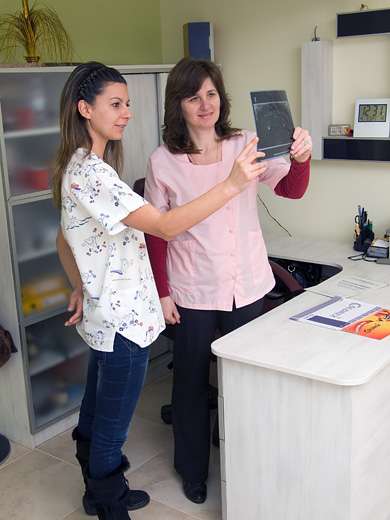

Für Zahnfleisch
Gesundes Zahnfleisch blutet nicht . Nicht schaden .
Gingivitis - Dies ist eine Entzündung des Zahnfleisches , die durch unsachgemäße Bürsten oder gute
Mundhygiene . Gingivitis kann durch Krankheit verursacht werden. Zahnfleisch blutet . Fragen Sie Ihren
Zahnarzt für eine effektive Behandlung .
Paradontose - Zahnfleischschwund . Zahnfleischtaschen gebildet werden. Gums verletzt . Notwendige
Zahnbehandlung.
Erweiterte Parodontitis . Tiefe Zahnfleischtaschen . Patienten fühlen Schmerz in den Zähnen , was
erschüttert werden kann . Mögliche Beeinträchtigungen des Wohlbefindens, Zahn / Zähne und Verletzung der
Kaufunktion . Die Behandlung wird fortgesetzt ...
Dental
Zahnbelag - bakterielle Film bildet fortlaufend um alle Zähne.
Tartar - mineralisierte Plaque , die eine Entzündung des Zahnfleisches verursacht - Gingivitis.
Karies - Demineralisation der Zahnoberfläche durch Säuren durch Bakterien im Mund produziert verursacht .
Pflege für Ihre Zähne und Zahnfleisch
Zahnbürste , Zahnpasta, Zahnseide , und mehr, ist die Lösung für den Zweck der Aufrechterhaltung der
Mundhygiene wichtig.
Regelmäßige Vorsorgeuntersuchungen beim Zahnarzt - mindestens einmal alle 6 Monate für die Früherkennung von
Problemen in der Kindheit .
Professionelle Zahnreinigung ist notwendig für otstrayavane von mineralisierten bakterieller Plaque (
Zahnstein ) .
Veneers
Furnier ist ein Mittel, um die Ästhetik und Haltbarkeit mit minimalem sanften Schleifen von Zahnsubstanz und
die Anwendung von modernen technischen Methoden wiederherzustellen.
Veneers können nicht nur Ihr Lächeln , sondern auch erheblich verbessern Sie Ihre Übertragung.
Teeth Whitening
Zahnaufhellung ist ein kosmetisches Verfahren , um Ihr Lächeln noch schöner. Es gibt Bleaching-Systeme zu
Hause und in der Zahnarztpraxis. Es ist unterschiedlicher Dauer . Zu Hause die gewünschte Wirkung innerhalb
von 10 bis 12 Tage und in der Zahnarztpraxis für etwa eine Stunde erreicht .
|